2 Sequences and Attention
2.1 Sequences and Memory
The previous section ended on order. An embedding (Definition 1.7) gives every word one vector \(\mathbf{v}_i\), the row of \(W\) selected by Equation 1.9, and that vector is the same wherever the word appears. Compare the two sentences The cat sat on the mat and The mat sat on the cat. They contain the same six words, so they contain the same six vectors. In the first the cat does the sitting and in the second the mat does, and nothing in the vectors records the difference. Any model that combines the vectors of a sentence without regard to their positions, by adding them or averaging them as the continuous bag of words does in Equation 1.14, gives the two sentences the same representation. Such a model is called a bag-of-words model, because a bag holds its contents without an order. This section asks what kind of model can read a sentence as a sequence, and what it costs to do so.
Two requirements follow from the example. The model must be sensitive to order, so that permuting the words can change its output. It must also accept sentences of any length with a fixed set of parameters, since sentences do not come in one size. A third requirement appears in a longer sentence: The scientist who discovered the fossils was awarded the prize. The verb was is singular because scientist is singular, and the plural noun fossils stands between them. To choose the verb form, a model reading left to right has to carry the number of the subject across the four words that stand between scientist and was. Dependencies of this kind, between words far apart in a sentence, are called long-range dependencies, and how far a model can carry information is the question on which the rest of this section turns.
Throughout, a text is a sequence \(w_{1:T}\) of tokens (Definition 1.1), and the input at position \(t\) is the embedding of the token there, \[ \mathbf{x}_t = \mathbf{v}_{w_t} \in \mathbb{R}^{D}, \tag{2.1}\] where \(D\) is the embedding dimension, so that the notation of §1.2 supplies the inputs. Vectors are set in bold as in the previous chapter. The other symbols are the standard ones: \(\mathbf{h}_t\) for the hidden state, \(W_h\) and \(W_x\) for the weights, and \(C_t\) for the cell state of the long short-term memory below. The cell state and the gate vectors of the gated cells are set in plain type, as in the papers that introduced them, although they too are vectors in \(\mathbb{R}^H\).
The recurrent network
The idea is to read the sequence one token at a time and to keep a running summary of what has been read so far. At each position the summary is updated from its previous value and the new input, and the same update is used at every position.
Definition 2.1 (Recurrent neural network) A recurrent neural network (RNN) with hidden size \(H\) maps an input sequence \(\mathbf{x}_1, \ldots, \mathbf{x}_T \in \mathbb{R}^{D}\) to a sequence of hidden states \(\mathbf{h}_1, \ldots, \mathbf{h}_T \in \mathbb{R}^{H}\) by \[ \mathbf{h}_t = \tanh\left(W_h \mathbf{h}_{t-1} + W_x \mathbf{x}_t + \mathbf{b}\right), \qquad t = 1, \ldots, T, \tag{2.2}\] starting from a fixed \(\mathbf{h}_0\), usually the zero vector. The parameters \(W_h \in \mathbb{R}^{H \times H}\), \(W_x \in \mathbb{R}^{H \times D}\) and \(\mathbf{b} \in \mathbb{R}^{H}\) are the same at every position, and \(\tanh\) is applied to each entry.
Equation 2.2 meets the first two requirements. Because the weights are shared, one set of parameters serves a sequence of any length. Because \(\mathbf{h}_t\) depends on \(\mathbf{h}_{t-1}\), which depends on \(\mathbf{h}_{t-2}\), the state at the end of a sentence depends on the order in which the words arrived. Exercise 1 shows this for a network with a single hidden unit, where cat mat and mat cat produce final states of opposite sign although their inputs average to the same vector. The sharing also has a plain consequence. Position 1 and position 15 are processed by the same \(W_h\) and \(W_x\), so the network has no separate record of where it is in the sentence. Whatever it knows about position is carried in \(\mathbf{h}_t\) along with everything else.
Figure 2.1 draws Equation 2.2 for the sentence The cat sat on the mat. Drawn this way, with one box per position, the network is said to be unrolled in time. The six boxes are six applications of one function, not six different layers, and each arrow from one box to the next carries the hidden state forward.
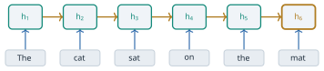
The cost of the model is easy to count. \(W_h\) has \(H^2\) entries, \(W_x\) has \(HD\) and \(\mathbf{b}\) has \(H\), so an RNN cell has \[ P_{\text{RNN}} = H(H + D) + H \tag{2.3}\] parameters, whatever the length of the sequence. With the embedding dimension \(D = 300\) of §1.2 and a hidden size of \(H = 256\), a common choice, this is \(256 \times 556 + 256 = 142{,}592\). The number of steps is a different matter. Each \(\mathbf{h}_t\) needs \(\mathbf{h}_{t-1}\), so a sequence of \(T\) tokens takes \(T\) steps that must be done one after another. The \(T\) matrix products cannot be spread across the positions of a sentence and computed at once.
The model has a long history in the study of language. Jeffrey Elman published Finding Structure in Time in Cognitive Science in 1990 (Elman 1990). His simple recurrent network fed the hidden layer back to itself as an extra input at the next step, which is Equation 2.2, and he trained it to predict the next word of short artificial sentences. The network was given no grammar. When Elman grouped the hidden states it produced for each word, nouns fell apart from verbs, and animate nouns apart from inanimate ones. His assumption was that time can be represented by its effect on processing rather than by an explicit position, which is exactly the property of Equation 2.2 noted above. What a trained hidden state can carry is of this kind, for example the grammatical role of recent words, the current subject or the tense of the verb. None of it is designed in, and what it holds is whatever helps the prediction.
Twenty years later the same model was a working language model. Tomas Mikolov, Martin Karafiát, Lukáš Burget, Jan Černocký and Sanjeev Khudanpur presented a recurrent network language model at Interspeech in 2010 (Mikolov et al. 2010). They reported that a mixture of such models reduced perplexity by about half compared with a state-of-the-art \(n\)-gram model in a speech recognition task. The connection with §1.1 is direct. The chain rule Equation 1.5 is exact, and the \(n\)-gram model makes it tractable by the Markov assumption Equation 1.6, which forgets every word more than \(n - 1\) positions back. A recurrent language model computes the next-word distribution from the state, \[ P(w_t \mid w_{1:t-1}) = \operatorname{softmax}\left(W_y \mathbf{h}_{t-1} + \mathbf{b}_y\right)_{w_t}, \tag{2.4}\] with an output matrix \(W_y \in \mathbb{R}^{|V| \times H}\) and bias \(\mathbf{b}_y\), where \(V\) is the vocabulary of Definition 1.1 and \(|V|\) its size. Since \(\mathbf{h}_{t-1}\) is computed from all of \(w_{1:t-1}\), no word is cut off by a fixed window. Whether the information about early words actually survives in \(\mathbf{h}_{t-1}\) is a separate question, and the answer depends on training.
Training through time
A recurrent network is trained by gradient descent, like the word embeddings of §1.2. Suppose a loss \(L_t\) is computed at each position, for example the negative logarithm of Equation 2.4, and the total loss is \(L = \sum_{t} L_t\). Because the weights are shared, the gradient with respect to a weight is a sum over positions. To compute it, the unrolled network of Figure 2.1 is treated as one deep network whose layers happen to share their weights, and the ordinary backpropagation algorithm is run through it from the last position to the first.
Definition 2.2 (Backpropagation through time) Backpropagation through time (BPTT) is the computation of the gradient of a recurrent network’s loss by unrolling the network over the sequence and applying backpropagation to the unrolled graph, summing the contributions of all positions to each shared weight.
David Rumelhart, Geoffrey Hinton and Ronald Williams described this unrolling in their 1986 paper in Nature on learning by back-propagating errors (Rumelhart et al. 1986). They showed that a recurrent network run for a fixed number of steps is equivalent to a layered network with one layer per step and identical weights in every layer, so the same procedure trains both. Paul Werbos set the method out in full under the name backpropagation through time in the Proceedings of the IEEE in 1990, with pseudocode and applications beyond neural networks (Werbos 1990).
The difficulty is in the chain rule. Consider the loss \(L_T\) at the last position and the hidden state \(\mathbf{h}_k\) at some earlier position \(k\). The state \(\mathbf{h}_k\) affects \(L_T\) only through \(\mathbf{h}_{k+1}, \ldots, \mathbf{h}_T\), so \[ \frac{\partial L_T}{\partial \mathbf{h}_k} = \frac{\partial L_T}{\partial \mathbf{h}_T} \prod_{t=k+1}^{T} \frac{\partial \mathbf{h}_t}{\partial \mathbf{h}_{t-1}}, \tag{2.5}\] a product of \(T - k\) Jacobian matrices, written here with the gradient as a row vector and the factors ordered from \(t = T\) on the left down to \(t = k + 1\) on the right. Each factor follows from Equation 2.2. Write \(\mathbf{a}_t = W_h \mathbf{h}_{t-1} + W_x \mathbf{x}_t + \mathbf{b}\), so that \(\mathbf{h}_t = \tanh(\mathbf{a}_t)\). Since \(\tanh'(a) = 1 - \tanh^2(a)\), \[ \frac{\partial \mathbf{h}_t}{\partial \mathbf{h}_{t-1}} = \operatorname{diag}\left(1 - \mathbf{h}_t \odot \mathbf{h}_t\right) W_h , \tag{2.6}\] where \(\odot\) is the entrywise product and \(\operatorname{diag}(\cdot)\) is the diagonal matrix with the given entries. The gradient that reaches position \(k\) from position \(T\) has therefore been multiplied by \(W_h\) once for every step between them, and by a diagonal matrix whose entries lie in \((0, 1]\).
The consequence follows from the norms. Let \(\lambda_1\) be the largest singular value of \(W_h\), the most that \(W_h\) can stretch a vector. Every entry of \(1 - \mathbf{h}_t \odot \mathbf{h}_t\) is at most 1, so each factor of Equation 2.5 has norm at most \(\lambda_1\), and \[ \left\lVert \frac{\partial L_T}{\partial \mathbf{h}_k} \right\rVert \le \left\lVert \frac{\partial L_T}{\partial \mathbf{h}_T} \right\rVert \lambda_1^{\,T-k} . \tag{2.7}\] If \(\lambda_1 < 1\), the gradient from position \(T\) to position \(k\) shrinks at least geometrically with the distance \(T - k\). This is the vanishing gradient. If the factors are larger than 1 in some direction the product can instead grow geometrically, and the gradient explodes. Informally the two cases are written \(|W_h| < 1\) and \(|W_h| > 1\), and \(\lambda_1\) is the measure of size that makes them precise. The precise statement is due to Razvan Pascanu, Tomas Mikolov and Yoshua Bengio at the International Conference on Machine Learning (ICML) in 2013 (Pascanu et al. 2013). For a nonlinearity whose derivative is bounded by \(\gamma\), they showed that \(\lambda_1 < 1/\gamma\) is sufficient for the long-range gradients to vanish and that \(\lambda_1 > 1/\gamma\) is necessary for them to explode. For \(\tanh\), \(\gamma = 1\), which gives the condition above. Their paper names \(\lambda_1\) as the largest eigenvalue of \(W_h\) in absolute value, but the norm bound in their proof, like the one above, needs the largest singular value, which is why we use it here.
Figure 2.2 shows the effect for a six-word sentence in which each step back multiplies the size of the gradient by \(\rho = 0.52\). Starting from 1 at the output, \(t = 6\), the gradient is \(0.52\) at \(t = 5\), then \(0.52^2 = 0.27\), \(0.52^3 = 0.14\), \(0.52^4 = 0.07\), and \(0.52^5 = 0.04\) at the first word. Over the 49 steps of a 50-word sentence the factor is \[ 0.52^{49} = e^{49 \ln 0.52} \approx e^{-32.0} \approx 1.2 \times 10^{-14}, \tag{2.8}\] far below the relative rounding error of the 32-bit arithmetic used to train networks, about \(6 \times 10^{-8}\), so a term of that size added to the short-range terms is lost. A factor slightly above 1 is as harmful in the other direction: \(1.5^{49} \approx 4.3 \times 10^{8}\).
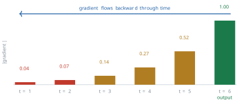
What vanishes needs stating with care. The gradient of \(L\) with respect to \(W_h\) is a sum of contributions, one for each pair of a loss position \(T\) and an earlier position \(k\), and the contribution of a pair is scaled by a product like Equation 2.7. The total gradient does not go to zero. The contributions from nearby positions remain, and they swamp the distant ones, which are smaller by a factor that falls geometrically with distance (Exercise 7). Gradient descent therefore adjusts the weights to exploit short-range regularities and receives almost no signal about long-range ones. In the scientist sentence the signal that should teach the network to carry the number of scientist to was is one of the smallest terms in the sum.
The problem had been analysed before Pascanu and colleagues. Yoshua Bengio, Patrice Simard and Paolo Frasconi published Learning Long-Term Dependencies with Gradient Descent is Difficult in the IEEE Transactions on Neural Networks in 1994 (Bengio et al. 1994). They showed a trade-off. Suppose a recurrent system is to store a piece of information for a long time, in a way that small disturbances of the input do not erase. Then its dynamics must be contracting near the stored state, and in that regime the gradients with respect to the distant past vanish. A network that can remember robustly is therefore hard to train by gradient descent to remember. The result is about gradient-based learning of the plain recurrent network of Equation 2.2. It does not say that no recurrent network can represent a long-range dependency, and the gated cells below are recurrent networks that learn them much better.
The two failures call for different remedies. An exploding gradient is large, so it can be detected and limited. Pascanu and colleagues proposed rescaling the gradient \(\mathbf{g}\) whenever its norm exceeds a threshold \(\theta\), \[ \mathbf{g} \leftarrow \frac{\theta}{\lVert \mathbf{g} \rVert}\, \mathbf{g} \quad \text{if } \lVert \mathbf{g} \rVert > \theta, \tag{2.9}\] which keeps its direction and bounds its length (Pascanu et al. 2013). This gradient clipping became standard practice. A vanishing gradient cannot be repaired in the same way, since the long-range part of the signal is not large and wrong but absent, buried under the short-range terms. The remedy has to change the factors of Equation 2.5 themselves.
Gated memory: the LSTM
Sepp Hochreiter and Jürgen Schmidhuber published the long short-term memory (LSTM) in Neural Computation in 1997 (Hochreiter and Schmidhuber 1997). Their starting point was Equation 2.5. If the error is to flow back over many steps without vanishing or exploding, the factor it is multiplied by at each step should be exactly 1. They built a memory cell whose state is connected to itself with weight 1 and passed through no squashing function. Its value, and the error flowing back through it, is then carried from step to step unchanged. They called this the constant error carousel. A cell that always keeps its contents is useless unless something decides what to write into it and when to read from it. So they added multiplicative gates that learn to open and close: an input gate in front of the cell and an output gate behind it.
The cell that is used today has one more gate. Felix Gers, Jürgen Schmidhuber and Fred Cummins showed in Neural Computation in 2000 that the original cell fails on long continuous streams of input that are not cut into separate sequences (Gers et al. 2000). With a self-connection fixed at 1 the cell state can only accumulate, and nothing resets it. They added a forget gate that multiplies the old cell state by a learned value between 0 and 1, so that the cell can learn to clear itself. The equations below include it.
Definition 2.3 (Long short-term memory) An LSTM cell keeps a hidden state \(\mathbf{h}_t \in \mathbb{R}^{H}\) and a cell state \(C_t \in \mathbb{R}^{H}\). Writing \([\mathbf{h}_{t-1}, \mathbf{x}_t] \in \mathbb{R}^{H + D}\) for the two inputs stacked into one vector and \(\sigma\) for the logistic function of §1.2, it computes the forget gate, the input gate, the candidate and the output gate, \[ \begin{aligned} f_t &= \sigma\left(W_f [\mathbf{h}_{t-1}, \mathbf{x}_t] + \mathbf{b}_f\right), & i_t &= \sigma\left(W_i [\mathbf{h}_{t-1}, \mathbf{x}_t] + \mathbf{b}_i\right), \\ \tilde{g}_t &= \tanh\left(W_g [\mathbf{h}_{t-1}, \mathbf{x}_t] + \mathbf{b}_g\right), & o_t &= \sigma\left(W_o [\mathbf{h}_{t-1}, \mathbf{x}_t] + \mathbf{b}_o\right), \end{aligned} \tag{2.10}\] each a vector in \(\mathbb{R}^{H}\), and then updates the two states by \[ C_t = f_t \odot C_{t-1} + i_t \odot \tilde{g}_t, \qquad \mathbf{h}_t = o_t \odot \tanh(C_t) . \tag{2.11}\]
Figure 2.3 draws the cell. The cell state runs along the top. The forget gate multiplies into it, the input gate adds to it, and the output gate reads a filtered copy of it out as \(\mathbf{h}_t\). Each gate is a small layer with its own weights that reads the same two inputs. The values of a gate lie between 0 and 1 in every coordinate, so a gate acts as a learned switch that can also be partly open. A forget gate near 0 in some coordinate erases that coordinate of the memory, and near 1 keeps it. A simple case shows when each is wanted. After the full stop at the end of a sentence the subject of that sentence is no longer needed and can be forgotten, and when a new subject appears the input gate can write it in.
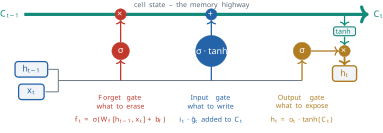
The reason the cell eases the vanishing gradient can be read off Equation 2.11. Along the direct path from \(C_{t-1}\) to \(C_t\), holding the gates fixed, \[ \frac{\partial C_t}{\partial C_{t-1}} = \operatorname{diag}(f_t), \tag{2.12}\] and over \(T - k\) steps the gradient along the cell state is multiplied by the product of the forget gates, \(\prod_{t=k+1}^{T} \operatorname{diag}(f_t)\). Compare Equation 2.6. There is no multiplication by a weight matrix and no derivative of a squashing function, only the gates, and the network can learn to hold them near 1. With no forget gate, as in the 1997 cell, the factor is exactly 1. This is the constant error carousel, and it is the precise sense in which an additive update does not shrink the gradient. The gates themselves depend on \(\mathbf{h}_{t-1}\), so the full Jacobian has further terms, but the direct path is the one that keeps the long-range signal alive.
The worked numbers make the difference concrete. Over the 49 steps of a 50-word sentence the plain network of Figure 2.2 keeps a fraction \(1.2 \times 10^{-14}\) of the gradient (Equation 2.8). An LSTM whose forget gate sits at \(0.95\) in some coordinate keeps \(0.95^{49} \approx 0.081\) along that coordinate, and one whose gate sits at \(0.99\) keeps \(0.99^{49} \approx 0.61\). The decay has not been removed. It has been put under the control of a learned quantity, which the network can drive close to 1 for exactly the coordinates that need to remember.
The price is in parameters and computation. Each of the four lines of Equation 2.10 has a weight matrix of size \(H \times (H + D)\) and a bias, so an LSTM cell has \[ P_{\text{LSTM}} = 4\left[H(H + D) + H\right] \tag{2.13}\] parameters, four times Equation 2.3. For \(H = 256\) and \(D = 300\) that is \(570{,}368\). Each step does about four times the work of an RNN step, so an LSTM of the same hidden size runs roughly four times slower.
A simpler gate: the GRU
In 2014 Kyunghyun Cho, Bart van Merriënboer, Caglar Gulcehre, Dzmitry Bahdanau, Fethi Bougares, Holger Schwenk and Yoshua Bengio proposed a new recurrent unit as part of a translation system, presented at the conference on Empirical Methods in Natural Language Processing (EMNLP) (Cho et al. 2014). They described it as motivated by the LSTM but much simpler to compute and to implement. It keeps one state instead of two and uses two gates instead of three. The name gated recurrent unit (GRU) does not appear in that paper. It was used by Junyoung Chung, Caglar Gulcehre, Kyunghyun Cho and Yoshua Bengio, who compared the unit with the LSTM on music and speech modelling later the same year and found the two comparable (Chung et al. 2014).
Definition 2.4 (Gated recurrent unit) A GRU cell keeps one state \(\mathbf{h}_t \in \mathbb{R}^{H}\). It computes a reset gate \(r_t\), an update gate \(z_t\) and a candidate state \(\tilde{\mathbf{h}}_t\), \[ \begin{aligned} r_t &= \sigma\left(W_r [\mathbf{h}_{t-1}, \mathbf{x}_t] + \mathbf{b}_r\right), \qquad z_t = \sigma\left(W_z [\mathbf{h}_{t-1}, \mathbf{x}_t] + \mathbf{b}_z\right), \\ \tilde{\mathbf{h}}_t &= \tanh\left(W_h [r_t \odot \mathbf{h}_{t-1}, \mathbf{x}_t] + \mathbf{b}_h\right), \end{aligned} \tag{2.14}\] and blends the old state with the candidate, \[ \mathbf{h}_t = (1 - z_t) \odot \mathbf{h}_{t-1} + z_t \odot \tilde{\mathbf{h}}_t . \tag{2.15}\]
The reset gate decides how much of the past enters the candidate. Near 0 the candidate is computed almost from the current input alone, and near 1 it uses the whole previous state. The update gate decides how much of the candidate replaces the old state. In Equation 2.14 the matrix \(W_h\) is the GRU’s own candidate weight, acting on the stacked vector, and not the \(W_h\) of Equation 2.2. The notation follows Figure 2.4, which shows the cell.
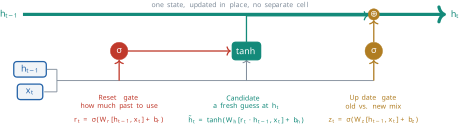
The GRU has its own version of the LSTM’s direct path. Holding the gates fixed, Equation 2.15 gives \[ \frac{\partial \mathbf{h}_t}{\partial \mathbf{h}_{t-1}} = \operatorname{diag}(1 - z_t) + \operatorname{diag}(z_t) \frac{\partial \tilde{\mathbf{h}}_t}{\partial \mathbf{h}_{t-1}} . \tag{2.16}\] When the update gate is near 0 in some coordinate, the first term is near the identity there and the second is near zero. The old state passes through almost unchanged, and so does the gradient. The role played by \(f_t\) in Equation 2.12 is played by \(1 - z_t\). One convention needs a warning. Cho and colleagues wrote the blend with \(z_t\) multiplying the old state and \(1 - z_t\) the candidate (Cho et al. 2014), so in their paper an update gate near 1 keeps the past. Equation 2.15 uses the opposite convention, in which a gate near 0 keeps the past. The two describe the same cell with \(z_t\) replaced by \(1 - z_t\), and software libraries do not all follow the same one.
The GRU has three weight matrices of the same size where the LSTM has four, \[ P_{\text{GRU}} = 3\left[H(H + D) + H\right], \tag{2.17}\] which is \(427{,}776\) for \(H = 256\) and \(D = 300\). Table 2.1 sets the three cells side by side.
| RNN | LSTM | GRU | |
|---|---|---|---|
| States | \(\mathbf{h}_t\) | \(\mathbf{h}_t\) and \(C_t\) | \(\mathbf{h}_t\) |
| Gates | none | forget, input, output | reset, update |
| Direct-path factor per step | \(\operatorname{diag}(1 - \mathbf{h}_t \odot \mathbf{h}_t)\, W_h\) | \(\operatorname{diag}(f_t)\) | \(\operatorname{diag}(1 - z_t)\) |
| Parameters | \(H(H + D) + H\) | \(4[H(H + D) + H]\) | \(3[H(H + D) + H]\) |
| Parameters, \(H = 256\), \(D = 300\) | \(142{,}592\) | \(570{,}368\) | \(427{,}776\) |
A common rule of thumb is that a plain RNN learns dependencies over roughly 10 to 20 tokens and the gated cells over roughly 50 to 100. These figures are a guide from experience rather than a measured law, since the reach of a trained network depends on the task, the data and the training. What Table 2.1 explains is the direction of the difference. The gated cells replace a fixed product of weight matrices with a product of learned gates, and the network can hold the gates open.
Sequences in, sequences out
The same cell serves problems of different shapes, depending on where the inputs enter and the outputs are read. In a many-to-one task the whole sequence is read and one output is computed from the final state, as in classifying the sentiment of a review from \(\mathbf{h}_T\). In a one-to-many task a single input starts a sequence of outputs. Text generation is the commonest case: with the language model of Equation 2.4, a word is sampled from the distribution, fed back as the next input, and the process repeats. In a many-to-many task a sequence is read and a sequence is produced, as in translation. The recurrent cell is the same in all three. What changes is the training data, which must consist of (input, output) pairs of the right shapes. Figure 2.5 sets the three shapes side by side.
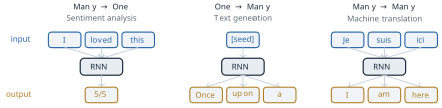
Translation needs more than one cell, because the output sentence has its own length and its own order. In 2014 two groups paired two recurrent networks for translation. Cho and colleagues used an encoder network to read a source phrase into a fixed-length vector and a decoder network to generate the target phrase from it, and used the pair to score phrase pairs inside an existing phrase-based statistical system (Cho et al. 2014). Ilya Sutskever, Oriol Vinyals and Quoc Le at Google presented the same design at the conference on Neural Information Processing Systems (NIPS) with deep LSTMs, and used it to translate whole sentences (Sutskever et al. 2014). On the English to French task of the 2014 Workshop on Statistical Machine Translation (WMT) their system scored 34.8 in the bilingual evaluation understudy (BLEU) measure, against 33.3 for a phrase-based statistical system on the same data. The design is now called the encoder-decoder, or sequence-to-sequence, model. Its assumption is visible in its structure. Everything the decoder knows about the source sentence passes through one vector, the encoder’s final state \(\mathbf{h}_T\), which has the same \(H\) numbers whether the source has five words or fifty.
A recurrent network that reads left to right also has no access to what comes later in the sentence, although a human reader of a finished sentence has. Mike Schuster and Kuldip Paliwal introduced the bidirectional recurrent network in the IEEE Transactions on Signal Processing in 1997 (Schuster and Paliwal 1997). It runs one network forwards and a second backwards over the same sequence and combines the two states at each position, so that every position has a summary of both its left and its right context. Bidirectional LSTMs became a common choice for tasks in which the whole sentence is available before any output is needed, such as tagging each word with its part of speech. They do not apply to generation, where the right context does not yet exist.
What recurrence assumes
The recurrent networks of this section assume that everything the model needs to know about the past can be held in one fixed-size vector, updated one step at a time. Three limits follow, and gating relieves only the first of them in part.
The first is distance. In a recurrent network the only path between position \(k\) and position \(T\) runs through every position between them, so the gradient along it is a product of \(T - k\) factors. The LSTM and the GRU make those factors learnable and close to 1, but a product of many numbers slightly below 1 still decays (Equation 2.12, Equation 2.16). Over a paragraph or more the gated cells also lose track of a subject or the antecedent of a pronoun. The second is the fixed state. The state has \(H\) numbers at every position, so a long input must be compressed, and in the encoder-decoder the whole source sentence must pass through \(\mathbf{h}_T\) before the first word of the output is written. The third is order of computation. Each state needs the one before it, so the \(T\) steps of a sequence cannot be computed in parallel, and training does not use well the hardware built for parallel arithmetic. A sentence of 50 tokens needs 50 sequential steps however many processors are available.
The next section starts from the second limit. Instead of asking the decoder to work from the single vector \(\mathbf{h}_T\), Bahdanau, Cho and Bengio let it consult all of the encoder’s states \(\mathbf{h}_1, \ldots, \mathbf{h}_T\) and learn, for each word it writes, which of them to weight most (Bahdanau et al. 2015). That mechanism, attention, gives every position a direct path to every other, whose length does not grow with their distance. Once the path is direct the recurrence is no longer needed to carry information, and the Transformer of Vaswani and colleagues removed it, which also removes the third limit (Vaswani et al. 2017).
Exercises
- Show that the sum and the mean of the input vectors of a sentence do not change when the words are permuted, so that a bag-of-words model gives The cat sat on the mat and The mat sat on the cat the same representation. (b) Take an RNN with \(H = D = 1\), \(W_h = 0.5\), \(W_x = 1\), \(b = 0\) and \(h_0 = 0\), with \(x_{\textit{cat}} = 1\) and \(x_{\textit{mat}} = -1\). Compute \(h_2\) for the input cat mat and for mat cat, and compare with the mean of the inputs.
- Derive Equation 2.3, Equation 2.13 and Equation 2.17 by counting the entries of each weight matrix and bias. (b) Evaluate all three for \(D = 300\) and \(H = 512\). (c) The embedding matrix \(W\) of Definition 1.7 for \(|V| = 50{,}000\) and \(D = 300\) has how many entries, and how does that compare with the LSTM cell? (d) How many sequential steps does each cell need for a sequence of \(T = 50\) tokens, and does the answer depend on \(H\)?
- Derive Equation 2.6 from Equation 2.2. (b) Show that every entry of \(1 - \mathbf{h}_t \odot \mathbf{h}_t\) lies in \((0, 1]\), and use the fact that the norm of a product of matrices is at most the product of their norms to prove Equation 2.7. (c) The logistic function \(\sigma\) has derivative \(\sigma(a)(1 - \sigma(a))\). Find its maximum value \(\gamma\), and state the condition on \(\lambda_1\) under which an RNN with \(\sigma\) in place of \(\tanh\) is guaranteed to have vanishing gradients.
- In a network where each step back multiplies the size of the gradient by a constant \(\rho\):
- with \(\rho = 0.52\), after how many steps does the gradient first fall below \(10^{-3}\) of its value at the output? (b) Repeat for \(\rho = 0.9\). (c) With \(\rho = 1.1\), compute the size after 49 steps, and the factor by which Equation 2.9 rescales it when \(\theta = 5\). (d) Explain why clipping helps with (c) and cannot help with (a).
- Verify the worked figures \(0.95^{49} \approx 0.081\) and \(0.99^{49} \approx 0.61\).
- Suppose an LSTM’s forget gate in one coordinate takes the constant value \(f = \sigma(b_f)\), determined by its bias alone. What value of \(f\) keeps half of the gradient along that coordinate over 100 steps, and what bias \(b_f\) gives it? (c) Explain why initialising \(b_f\) to a large positive value helps an LSTM learn long-range dependencies early in training.
- Show that if \(z_t = 0\) in every coordinate at every step, a GRU ends in the state it started in, \(\mathbf{h}_T = \mathbf{h}_0\), whatever its inputs. (b) Show that with \(r_t = 1\) and \(z_t = 1\) at every step the GRU reduces to a plain RNN of the form Equation 2.2, and identify its \(W_h\) and \(W_x\) as blocks of the GRU’s \(W_h\). (c) Rewrite Equation 2.15 in the convention of Cho and colleagues and check that substituting \(z_t \to 1 - z_t\) recovers it. (d) Derive the Jacobian of Equation 2.16.
- Consider a sequence of length \(T\) with a loss at every position, and suppose that the contribution to \(\partial L / \partial W_h\) of the pair of positions \((k, t)\) with \(t \ge k\) has size proportional to \(\rho^{\,t - k}\) for a fixed \(0 < \rho < 1\). (a) For a very long sequence, show that the fraction of the total coming from pairs at distance \(d \ge m\) approaches \(\rho^{m}\).
- Evaluate it for \(\rho = 0.52\) and \(m = 10\), and explain what this means for learning the agreement between scientist and was. (c) Repeat (b) for a gated cell with an effective \(\rho = 0.95\).
- An encoder reads a source sentence of 50 tokens, each embedded with \(D = 300\), into a final state \(\mathbf{h}_T\) with \(H = 256\). (a) How many numbers describe the input, and how many reach the decoder? (b) Explain why making \(H\) larger relieves the bottleneck but does not remove it, given the sequential computation of Equation 2.2. (c) A bidirectional encoder (Schuster and Paliwal (1997)) produces a forward and a backward state at each position. Besides giving every position its right context, which is not one of the three limits of recurrence stated at the end of this section, does it relieve any of those three, for some positions at least, and which does it leave in place? Consider how far an early source word is from the final state of the backward network. (d) Describe, in one paragraph, a change to the decoder that would let it use all \(T\) encoder states instead of \(\mathbf{h}_T\) alone, without fixing in advance which state matters for which output word.
2.2 The Attention Breakthrough
The previous section ended on a bottleneck. In the encoder-decoder model of Cho and colleagues (Cho et al. 2014) and of Sutskever, Vinyals and Le (Sutskever et al. 2014), the encoder reads the source sentence into states \(\mathbf{h}_1, \ldots, \mathbf{h}_T\), and the decoder is given only the last of them, \(\mathbf{h}_T\). That vector has the same \(H\) numbers, \(H\) being the hidden size of §2.1, whether the source has five words or fifty. The encoder has to compress the whole sentence into it before the decoder writes its first word, and the decoder has no way back to anything the compression lost. This section asks how the decoder can use all of the encoder’s states without fixing in advance which state matters for which output word, and what follows once that question has a general answer.
Two sentences show what is at stake. In The trophy did not fit in the suitcase because it was too big, the pronoun it refers to trophy, eight positions earlier. A recurrent network reading left to right must carry the identity of trophy through seven updates of Equation 2.2, one for each word in between, before it reaches it, and three more before the end of the sentence, where the encoder’s summary is taken. Each update rewrites the state from the previous state and a new word, so information about an early word survives only to the extent that every later update preserves it. The second sentence is a translation. Figure 2.6 draws the encoder-decoder for a three-word English sentence and its French translation J’aime Paris. Every arrow from the encoder to the decoder passes through the single vector in the middle.
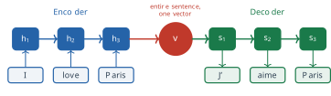
For three words the vector is large enough. The difficulty is that its size is fixed while the sentence is not. Making \(H\) larger postpones the problem without removing it, and the encoder’s own states \(\mathbf{h}_1, \ldots, \mathbf{h}_{T-1}\), which describe the sentence position by position, are computed and then discarded. The idea of this section is to keep them.
Learning where to look
Write the source sentence as \(x_1, \ldots, x_{T_x}\) and the target sentence as \(y_1, \ldots, y_{T_y}\), so that \(T_x\) is the \(T\) of §2.1. The encoder produces one state \(\mathbf{h}_j\) for each source position \(j\), and the decoder has a state \(\mathbf{s}_i\) for each target position \(i\). When the decoder is about to write \(y_i\), its state is \(\mathbf{s}_{i-1}\). Instead of a single summary of the source for the whole translation, we give the decoder a separate summary \(\mathbf{c}_i\) for each target word, built from all of the encoder states and weighted towards the ones that matter for that word. Three steps define it.
The first step scores each encoder state against the decoder’s current state. A function \(a\), the alignment model, gives the score \[ e_{ij} = a\left(\mathbf{s}_{i-1}, \mathbf{h}_j\right), \qquad j = 1, \ldots, T_x . \tag{2.18}\] A large \(e_{ij}\) says that source position \(j\) is relevant to the target word about to be written. The second step turns the \(T_x\) scores into weights. The scores can be any real numbers, and we want weights that are positive and sum to 1, so we use the softmax of §1.2, \[ \alpha_{ij} = \frac{\exp(e_{ij})}{\sum_{k=1}^{T_x} \exp(e_{ik})} . \tag{2.19}\] The third step forms the summary as the weighted average of the encoder states, \[ \mathbf{c}_i = \sum_{j=1}^{T_x} \alpha_{ij}\, \mathbf{h}_j . \tag{2.20}\]
Definition 2.5 (Attention) An attention mechanism computes, for a state \(\mathbf{s}\) that needs information and a set of states \(\mathbf{h}_1, \ldots, \mathbf{h}_{T_x}\) that hold it, a score for each \(\mathbf{h}_j\) against \(\mathbf{s}\), normalises the scores into weights \(\alpha_j \ge 0\) with \(\sum_j \alpha_j = 1\) by a softmax, and returns the weighted sum \(\sum_j \alpha_j \mathbf{h}_j\). The weights are the attention weights and the weighted sum is the context vector.
The decoder then uses \(\mathbf{c}_i\) alongside its previous state and the previous word. Its state is updated by \(\mathbf{s}_i = f(\mathbf{s}_{i-1}, y_{i-1}, \mathbf{c}_i)\) and the next word is predicted from \(\mathbf{s}_i\), \(y_{i-1}\) and \(\mathbf{c}_i\). Compared with the encoder-decoder of §2.1, the only change is that the fixed vector \(\mathbf{h}_T\) has been replaced by a vector \(\mathbf{c}_i\) that is recomputed at every target position. When the decoder writes chat the weights can sit on cat, and when it writes tapis they can sit on mat.
Every operation in Equation 2.18 to Equation 2.20 is differentiable, so the gradient of the translation loss flows through the weights into the alignment model and into the encoder. The alignment is therefore learned from translation pairs alone, together with everything else, and no word alignment has to be supplied. This is the reason for a soft average rather than a hard choice. Picking the single highest-scoring state, \(\mathbf{c}_i = \mathbf{h}_{j^*}\) with \(j^* = \arg\max_j e_{ij}\), would make \(\mathbf{c}_i\) a piecewise constant function of the scores, whose gradient with respect to them is zero almost everywhere (Exercise 8). The weights also have a probabilistic reading. If \(\alpha_{ij}\) is taken as the probability that \(y_i\) is aligned to \(x_j\), then \(\mathbf{c}_i\) is the expected encoder state under that distribution.
Dzmitry Bahdanau, Kyunghyun Cho and Yoshua Bengio introduced this mechanism in Neural Machine Translation by Jointly Learning to Align and Translate, released as a preprint in 2014 and published at the International Conference on Learning Representations (ICLR) in 2015 (Bahdanau et al. 2015). Their stated motivation was the fixed-length vector of the encoder-decoder, which they conjectured made it perform badly on long sentences. They parametrised the alignment model as a network with one hidden layer, \[ a\left(\mathbf{s}_{i-1}, \mathbf{h}_j\right) = \mathbf{v}_a^{\top} \tanh\left(W_a \mathbf{s}_{i-1} + U_a \mathbf{h}_j\right), \tag{2.21}\] with learned \(W_a\), \(U_a\) and \(\mathbf{v}_a\). This form is now called additive attention, because the two states enter through a sum. Their encoder was the bidirectional network of Schuster and Paliwal (Schuster and Paliwal 1997), and each \(\mathbf{h}_j\) was the forward and backward states at position \(j\) stacked into one vector, so that it summarised the words on both sides of \(x_j\). The recurrent cells on both sides were gated units of the kind defined in Definition 2.4, with 1000 hidden units.
They trained on the English to French data of the 2014 Workshop on Statistical Machine Translation (WMT) and compared their model with an encoder-decoder trained the same way on the same data. With training sentences of up to 50 words, the bilingual evaluation understudy (BLEU) score on the test set rose from 17.82 for the encoder-decoder to 26.75 for the attention model. On the sentences with no unknown words it rose from 26.71 to 34.16, against 35.63 for the phrase-based system Moses. The more telling result concerned length. The score of the encoder-decoder fell steeply as the source sentences grew longer, and the score of the attention model trained on sentences of up to 50 words showed no fall even for sentences of 50 words or more. The comparison changed two things at once, the bidirectional encoder and the way the decoder reads the source, and the paper credits the model as a whole. The length result points to the second, since it is the fixed-length vector that the attention model gives up.
The weights \(\alpha_{ij}\) for one sentence pair form a \(T_y \times T_x\) matrix, the alignment matrix, with one row for each target word and one column for each source word. Bahdanau and colleagues displayed such matrices for sentences from the test set, and they found that the weights mostly followed the word order, with departures where French and English order differ, such as the position of adjectives. Figure 2.7 shows the pattern for The cat sat on the mat and Le chat s’est assis sur le tapis. The values are illustrative, chosen to show the shape of a learned matrix rather than taken from a trained model. Each row is a probability distribution over the six English words. Most rows put most of their weight on one word. The French verb s’est assis takes two target words to render the one English word sat, so the rows for s’est and assis share that column.
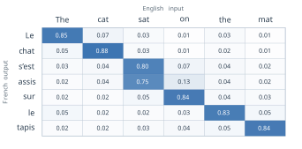
Bahdanau and colleagues were not the last to choose the alignment model. Minh-Thang Luong, Hieu Pham and Christopher Manning compared several forms at the conference on Empirical Methods in Natural Language Processing (EMNLP) in 2015 (Luong et al. 2015). Among them were the plain dot product \(\mathbf{s}^{\top}\mathbf{h}_j\) and a general form \(\mathbf{s}^{\top} W_a \mathbf{h}_j\) with one learned matrix. Both are cheaper than Equation 2.21 because they need no hidden layer. The dot product is the form on which the rest of this section and the rest of the book build.
Queries, keys and values
Definition 2.5 has three roles in it. One state asks for information. The other states are compared with it to decide how much each one contributes. The same states then supply the information. In Equation 2.18 and Equation 2.20 the encoder states play both of the last two roles: \(\mathbf{h}_j\) is scored against \(\mathbf{s}_{i-1}\), and \(\mathbf{h}_j\) is also what is averaged. Nothing requires the vector that is compared to be the vector that is returned. Separating the three roles gives the general form of attention.
The vocabulary comes from retrieval. A reader in a library has a question in mind, compares it with the label on the spine of each book, and reads the pages of the books whose labels match best. The question is the query, the spine label is the key, and the pages are the value. A key says what an item is about, which is what the query is compared with, and a value is what the item contributes once it has been selected. The analogy fails in one respect. A reader picks a few books and ignores the rest, while attention takes a weighted mixture of every value. A value whose key matches poorly receives a small weight, never exactly zero.
The three vectors have to come from somewhere. A first answer is to use the word embeddings of §1.2 directly. The query and the key would be the vectors \(\mathbf{v}_w\) of the two words, and the score their dot product. Those vectors were trained for a different task. Training with the skip-gram objective of §1.2 places two words close together when they occur in similar contexts. Similarity of context is not the relevance that attention needs: the word the occurs near almost every noun and is relevant to almost none of them. There is also a structural defect. If the query and the key of a word are the same vector, then by the Cauchy-Schwarz inequality the score of a word with itself is at least as large as its score with any other word of the same length, so every word attends most to itself (Exercise 6). The comparison needs its own space, in which a large dot product means relevance for the task at hand. Nobody knows how to design the axes of that space, so the model learns it.
Definition 2.6 (Query, key and value projections) Let \(\mathbf{x}_1, \ldots, \mathbf{x}_T \in \mathbb{R}^{D}\) be the input vectors of a sequence. Three learned matrices \(W^{(Q)}, W^{(K)} \in \mathbb{R}^{d_k \times D}\) and \(W^{(V)} \in \mathbb{R}^{d_v \times D}\), shared by every position, give each position a query, a key and a value, \[ \mathbf{q}_i = W^{(Q)} \mathbf{x}_i, \qquad \mathbf{k}_i = W^{(K)} \mathbf{x}_i, \qquad \mathbf{v}_i = W^{(V)} \mathbf{x}_i . \tag{2.22}\]
The sharing matters in the same way as the shared weights of Equation 2.2. There is one query matrix for the whole vocabulary, not one per word, so the number of parameters does not depend on the length of the sequence or on which words it contains. The figures of this section write \(Q_i\), \(K_i\) and \(V_i\) for \(\mathbf{q}_i\), \(\mathbf{k}_i\) and \(\mathbf{v}_i\), and \(x_i\) for \(\mathbf{x}_i\). Queries and keys share the dimension \(d_k\) so that their dot product is defined. The values may have a different dimension \(d_v\), since they are only averaged. The three matrices start at random values and are trained by backpropagation with the rest of the network. With the dot product as the score, the score of query \(i\) against key \(j\) is \[ z_{i,j} = \mathbf{q}_i^{\top} \mathbf{k}_j = \mathbf{x}_i^{\top} \left(W^{(Q)}\right)^{\top} W^{(K)} \mathbf{x}_j , \tag{2.23}\] which is the general score of Luong and colleagues with the matrix \(\left(W^{(Q)}\right)^{\top} W^{(K)}\), a \(D \times D\) matrix of rank at most \(d_k\) (Exercise 7). Because that matrix need not be symmetric, \(z_{i,j}\) and \(z_{j,i}\) can differ: word \(i\) can find word \(j\) relevant without the reverse being true.
The weights and the output for position \(i\) then follow Equation 2.19 and Equation 2.20 with the new names, \[ \alpha_{i,j} = \operatorname{softmax}_j\left(z_{i,j}\right) = \frac{\exp(z_{i,j})}{\sum_{k=1}^{T} \exp(z_{i,k})}, \qquad \mathbf{z}_i = \sum_{j=1}^{T} \alpha_{i,j}\, \mathbf{v}_j . \tag{2.24}\] The scores carry two indices and the outputs one, which is how the figures tell them apart. Figure 2.8 draws the computation for the three words The cat sat. Each word’s embedding \(x_i\) is mapped by the three shared matrices to \(Q_i\), \(K_i\) and \(V_i\). Every query is compared with every key, itself included, which gives nine scores \(z_{i,j}\) in three groups of three. Each group passes through its own softmax to give three weights, and the weights of query \(i\) combine the three values into the output \(z_i\).
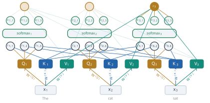
Scaled dot-product attention
The computation of Equation 2.24 for all positions at once is a pair of matrix products. Stack the queries as the rows of a matrix \(Q \in \mathbb{R}^{T \times d_k}\), the keys as the rows of \(K \in \mathbb{R}^{T \times d_k}\) and the values as the rows of \(V \in \mathbb{R}^{T \times d_v}\). Entry \((i, j)\) of \(Q K^{\top}\) is \(\mathbf{q}_i^{\top}\mathbf{k}_j = z_{i,j}\), so \(QK^{\top}\) holds all \(T^2\) scores. Applying the softmax to each row gives the weights, and multiplying by \(V\) forms every weighted sum. Ashish Vaswani and seven colleagues, most of them at Google Brain and Google Research, gave the form that is now standard in the paper that introduced the Transformer, presented at the conference on Neural Information Processing Systems (NeurIPS) in 2017 (Vaswani et al. 2017):
Definition 2.7 (Scaled dot-product attention) For queries \(Q \in \mathbb{R}^{T \times d_k}\), keys \(K \in \mathbb{R}^{T' \times d_k}\) and values \(V \in \mathbb{R}^{T' \times d_v}\), scaled dot-product attention is \[ \operatorname{Attention}(Q, K, V) = \operatorname{softmax}\left(\frac{QK^{\top}}{\sqrt{d_k}}\right) V , \tag{2.25}\] where the softmax is applied to each row separately. The result has one row of length \(d_v\) for each query.
The only new element is the division by \(\sqrt{d_k}\). Vaswani and colleagues noted that the dot product without scaling did worse than additive attention when \(d_k\) was large, and suspected that large dot products push the softmax into a region where its gradients are extremely small. The size of the dot products follows from a short calculation. Suppose that the components of \(\mathbf{q}\) and \(\mathbf{k}\) are independent random variables with mean 0 and variance 1, which is roughly the situation at the start of training. Each product \(q_m k_m\) then has mean \(\mathbb{E}[q_m]\,\mathbb{E}[k_m] = 0\) and variance \(\mathbb{E}[q_m^2]\,\mathbb{E}[k_m^2] = 1\), and the \(d_k\) products are independent, so \[ \mathbb{E}\left[\mathbf{q}^{\top}\mathbf{k}\right] = 0, \qquad \operatorname{Var}\left(\mathbf{q}^{\top}\mathbf{k}\right) = \sum_{m=1}^{d_k} \operatorname{Var}(q_m k_m) = d_k . \tag{2.26}\] The typical size of a score is its standard deviation, \(\sqrt{d_k}\). With \(d_k = 64\), the value used by Vaswani and colleagues, scores of size 8 are normal, and differences of that size between the scores of one row give a softmax that is close to a one-hot vector. Dividing by \(\sqrt{d_k}\) brings the variance back to 1 whatever the dimension.
The effect on the gradient comes from the derivative of the softmax. For the weights of one row, with the row index dropped so that \(z_j\) here is a score and not an output, \(\alpha_j = \exp(z_j) / \sum_k \exp(z_k)\), \[ \frac{\partial \alpha_j}{\partial z_m} = \alpha_j \left(\delta_{jm} - \alpha_m\right), \tag{2.27}\] where \(\delta_{jm}\) is 1 if \(j = m\) and 0 otherwise. If one weight is close to 1 and the others are close to 0, every term of Equation 2.27 is close to 0. The diagonal terms are small because \(\alpha_j(1 - \alpha_j)\) is small at both ends. The others are small because each is a product of two weights, at least one of which is small. A saturated softmax passes almost no gradient back to the scores, and so almost none to \(W^{(Q)}\) and \(W^{(K)}\), which is the problem of §2.1 in a new place.
A worked example shows the size of the effect. Take \(d_k = 4\), one query and three keys, \[ \mathbf{q} = \begin{pmatrix} 2 \\ 2 \\ 1 \\ 1 \end{pmatrix}, \quad \mathbf{k}_1 = \begin{pmatrix} 1 \\ 1 \\ 1.4 \\ 0 \end{pmatrix}, \quad \mathbf{k}_2 = \begin{pmatrix} 2 \\ 2 \\ 0.6 \\ 0 \end{pmatrix}, \quad \mathbf{k}_3 = \begin{pmatrix} 0 \\ 0 \\ 0.2 \\ 1 \end{pmatrix}, \tag{2.28}\] so that the scores are \(\mathbf{q}^{\top}\mathbf{k}_1 = 5.4\), \(\mathbf{q}^{\top}\mathbf{k}_2 = 8.6\) and \(\mathbf{q}^{\top}\mathbf{k}_3 = 1.2\). Dividing by \(\sqrt{4} = 2\) gives \(2.7\), \(4.3\) and \(0.6\), and the exponentials are \(14.88\), \(73.70\) and \(1.82\), with sum \(90.40\). The weights are \[ \alpha_1 = 0.165, \qquad \alpha_2 = 0.815, \qquad \alpha_3 = 0.020 . \tag{2.29}\] The second key, which points almost the same way as the query, takes most of the weight. The first keeps a sixth and the third almost nothing. Give the three keys the values \(\mathbf{v}_1 = (1, 0)^{\top}\), \(\mathbf{v}_2 = (0, 1)^{\top}\) and \(\mathbf{v}_3 = (1, 1)^{\top}\). The output is \[ \mathbf{z} = 0.165 \begin{pmatrix} 1 \\ 0 \end{pmatrix} + 0.815 \begin{pmatrix} 0 \\ 1 \end{pmatrix} + 0.020 \begin{pmatrix} 1 \\ 1 \end{pmatrix} = \begin{pmatrix} 0.185 \\ 0.835 \end{pmatrix}, \tag{2.30}\] mostly the second value with a share of the first. Without the scaling the weights would be \(0.039\), \(0.960\) and \(0.0006\). The largest diagonal term of Equation 2.27 is then \(\alpha_2(1 - \alpha_2) = 0.038\), against \(0.151\) with the scaling, a factor of four smaller at \(d_k = 4\). At \(d_k = 64\) the unscaled scores are typically four times larger again, and the factor grows quickly, to tens of thousands (Exercise 2(c)). Figure 2.9 draws the scaled computation as one pipeline.
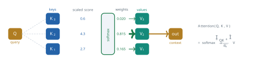
Self-attention
In the encoder-decoder, the queries come from one sequence and the keys and values from another: the decoder asks and the encoder answers. Nothing in Definition 2.7 requires two sequences. When the queries, the keys and the values are all computed from the same sequence by Equation 2.22, every position attends to every position of its own sequence, including itself. The computation of Figure 2.8 is of this kind, since The, cat and sat supply all three roles.
Definition 2.8 (Self-attention) Self-attention is attention in which the queries, keys and values are all computed from the same sequence: for inputs \(X \in \mathbb{R}^{T \times D}\) with rows \(\mathbf{x}_i^{\top}\), it is Equation 2.25 with \(Q = X \left(W^{(Q)}\right)^{\top}\), \(K = X \left(W^{(K)}\right)^{\top}\) and \(V = X \left(W^{(V)}\right)^{\top}\). Its output is a new vector \(\mathbf{z}_i\) for every position, computed from the whole sequence.
The idea predates the Transformer. Jianpeng Cheng, Li Dong and Mirella Lapata used attention within a single sequence, which they called intra-attention, in a model for machine reading presented at EMNLP in 2016 (Cheng et al. 2016). Their network was still recurrent, and at each step it attended over the representations of the words it had already read. Vaswani and colleagues made self-attention the main operation of a network rather than an addition to a recurrent one (Vaswani et al. 2017).
The sentence The dog bit the man because he was angry shows what the output \(\mathbf{z}_i\) can represent. To interpret he, a reader has to decide between dog and man. In self-attention the query of he is compared with the keys of all nine words, and a trained model might put about 0.72 of the weight on dog and 0.18 on man, with the rest spread thinly (Figure 2.10). These numbers are illustrative, not measured.
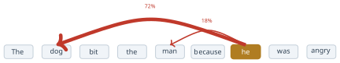
The output for he is then mostly the value of dog, so the vector that represents he at this point of the network carries information about its likely antecedent. Two things about this computation are new. The word dog is five positions before he, and its value reaches he in one step, by the same operation that would reach the word immediately before it. And the weights are not stored anywhere. They are computed from this sentence, and a different sentence gives different weights.
The second point marks a real break with every unit the book has used so far. Figure 2.11 sets three units side by side. The standard unit computes \(a = \sigma\left(\sum_i w_i x_i + b\right)\), and its weights \(w_i\) are parameters, fixed once training ends. The recurrent unit of Equation 2.2 adds its own previous state through a second matrix, but both of its matrices are again fixed after training. The attention unit also forms a weighted sum, \(\mathbf{z}_2 = \sum_j \alpha_{2j} \mathbf{v}_j\), but its weights \(\alpha_{2j} = \operatorname{softmax}_j(\mathbf{q}_2^{\top}\mathbf{k}_j)\) are computed from the input at run time. What is learned is the way to compute weights, through \(W^{(Q)}\) and \(W^{(K)}\), rather than the weights themselves. (The figure leaves out the \(1/\sqrt{d_k}\) of Equation 2.25.)
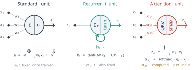
What attention removes, and what it does not
Section 2.1 closed with three limits of recurrence: distance, the fixed state, and sequential computation. Attention removes the first two. The path from a source position to the decoder, or from one position to another in self-attention, is a single weighted sum, whatever the distance between the two positions. In the terms of Equation 2.5, the gradient from position \(i\) to position \(j\) no longer passes through a product of \(|i - j|\) Jacobians. The fixed state is gone as well, because the information is held in \(T\) vectors, one per position, and the number of vectors grows with the input. Vaswani and colleagues summarised the comparison by the maximum length of the path between two positions, which is of order \(T\) for a recurrent layer and constant for a self-attention layer (Vaswani et al. 2017).
The third limit is a different matter, and the answer depends on where attention is used. In the model of Bahdanau and colleagues the encoder and the decoder are still recurrent networks. The encoder still needs \(T_x\) steps one after another to produce \(\mathbf{h}_1, \ldots, \mathbf{h}_{T_x}\), and the decoder still produces its states in order, so attention there adds a direct path without removing the sequence of computation. A self-attention layer, on the other hand, has no dependence of one position on the previous one. All \(T^2\) scores are entries of one matrix product and all \(T\) outputs come from a second, and the positions can be computed at the same time. The parallel computation belongs to self-attention used without recurrence, which is what the next section builds.
Self-attention has a cost that recurrence does not. The score matrix \(QK^{\top}\) has \(T^2\) entries, so the work and memory of a self-attention layer grow with the square of the sequence length, of order \(T^2 d_k\), while a recurrent layer does work of order \(T H^2\). For short sentences this is no burden. For long documents it becomes the dominant cost, and much later work on long contexts is about reducing it.
A second limit follows from Equation 2.25 itself. Nothing in it refers to position. Suppose the rows of \(X\) are permuted, so that the words of the sentence appear in a different order. The queries, keys and values are permuted in the same way, the score matrix has its rows and columns permuted, and the softmax of each row is unchanged except for the order of its entries. The result is that every word receives exactly the same output vector as before, now at its new position (Exercise 5). In the language of §2.1, self-attention on its own is a bag-of-words model: The dog bit the man and The man bit the dog give the word dog the same output. The recurrent network knew the order of its inputs because it read them in order. A model built from self-attention alone has to be told the order, and the next section shows how.
The assumptions of the mechanism can be stated plainly. Attention assumes that the relevance of one position to another can be measured by a learned score of two vectors, and that the information needed at a position is a convex combination of the values of the sequence. A single set of weights per position is one way of looking at the sentence at a time. A word whose interpretation needs two different relations at once, such as its subject and its object, has to share one distribution between them. Vaswani and colleagues addressed this by running several attention functions side by side, each with its own projections, which is the multi-head attention of the next section. Bahdanau and colleagues also reported where their model still fell short: on all sentences of the test set, including those with unknown words, its BLEU score of 26.75 remained well below the 33.30 of the phrase-based system (Bahdanau et al. 2015). Their model knew only the 30,000 most frequent words of each language, and the phrase-based system also drew on a separate monolingual corpus of 418 million words.
The next section starts from the observation that, once every position can reach every other in one step, the recurrent networks on either side of the attention are no longer needed to carry information. Vaswani and colleagues removed them and built the encoder and the decoder from attention alone, adding an explicit representation of position to repair the loss of order (Vaswani et al. 2017).
Exercises
- Show that the weights of Equation 2.19 are positive and sum to 1 for any real scores.
- Show that adding the same constant \(c\) to every score \(e_{i1}, \ldots, e_{iT_x}\) leaves the weights unchanged, and explain why software subtracts the largest score before exponentiating.
- Compute the weights for the scores \((2, 1, 0)\), and again for \((20, 10, 0)\).
- Verify the weights Equation 2.29 and the output Equation 2.30 from the vectors of Equation 2.28. (b) Compute the weights and the output without the division by \(\sqrt{d_k}\), and compare the two outputs with \(\mathbf{v}_2\). (c) Suppose the same keys and query were scaled so that every score was multiplied by 4, as a rough model of moving from \(d_k = 4\) to \(d_k = 64\) without scaling. Compute the unscaled weights and the largest diagonal term of Equation 2.27.
- Derive Equation 2.26 under the stated assumptions. (b) Show that the scaled score \(\mathbf{q}^{\top}\mathbf{k} / \sqrt{d_k}\) has variance 1. (c) If the components of \(\mathbf{q}\) and \(\mathbf{k}\) have variance \(\sigma^2\) instead of 1, what scaling factor gives a score of variance 1? (d) Derive Equation 2.27 from the definition of the softmax.
Self-attention is applied to a sequence of \(T = 50\) tokens with \(D = 300\), \(d_k = d_v = 64\).
- How many parameters do \(W^{(Q)}\), \(W^{(K)}\) and \(W^{(V)}\) have together, and how does this compare with the \(570{,}368\) parameters of the LSTM cell of Equation 2.13 for \(H = 256\) and \(D = 300\)? (b) How many entries does \(QK^{\top}\) have, and how many multiplications does computing it take? (c) How many of the computations in
- depend on each other in sequence, and how many sequential steps does an RNN need for the same sequence? (d) Repeat (b) for \(T = 5{,}000\), and comment.
Let \(P\) be a \(T \times T\) permutation matrix, so that \(PX\) lists the rows of \(X\) in a different order. (a) Show that replacing \(X\) by \(PX\) in Definition 2.8 replaces \(QK^{\top}\) by \(P\,QK^{\top}P^{\top}\). (b) Show that the row-wise softmax satisfies \(\operatorname{softmax}(PSP^{\top}) = P \operatorname{softmax}(S) P^{\top}\) for any square matrix \(S\). (c) Conclude that the output for \(PX\) is \(P\) times the output for \(X\), and state in words what this means for The dog bit the man and The man bit the dog.
Suppose the score were the dot product of the embeddings themselves, \(z_{i,j} = \mathbf{x}_i^{\top}\mathbf{x}_j\), which is Equation 2.23 with \(W^{(Q)} = W^{(K)} = I\). (a) Use the Cauchy-Schwarz inequality to show that if all embeddings have the same length, then \(z_{i,i} \ge z_{i,j}\) for every \(j\). (b) Explain why this makes the choice of separate learned matrices \(W^{(Q)}\) and \(W^{(K)}\) necessary for a word such as he to attend mostly to another word. (c) Give an example of \(2 \times 2\) matrices \(W^{(Q)}\) and \(W^{(K)}\) and two vectors \(\mathbf{x}_1, \mathbf{x}_2\) of equal length for which \(z_{1,2} > z_{1,1}\).
- Show that Equation 2.23 can be written \(\mathbf{x}_i^{\top} M \mathbf{x}_j\) with \(M = \left(W^{(Q)}\right)^{\top} W^{(K)}\), and that \(M\) has rank at most \(d_k\). (b) Give an example in which \(z_{i,j} \neq z_{j,i}\), and explain why this asymmetry is useful for a pronoun and its antecedent. (c) The additive score Equation 2.21 is evaluated \(T_x \times T_y\) times per sentence pair. Show that \(U_a \mathbf{h}_j\) can be computed once per source position, and count the matrix-vector products that remain.
- Let \(\mathbf{c}_i = \mathbf{h}_{j^*}\) with \(j^* = \arg\max_j e_{ij}\) (hard attention). Show that a small change in any score that does not change \(j^*\) leaves \(\mathbf{c}_i\) unchanged, and conclude that the gradient of \(\mathbf{c}_i\) with respect to the scores is zero wherever it is defined. (b) Show that the soft context vector of Equation 2.20 tends to the hard one when every score is multiplied by a factor \(\beta \to \infty\), assuming the largest score is unique. (c) In the light of (a) and (b) and of Equation 2.27, explain the trade-off between sharp and smooth attention weights in training.